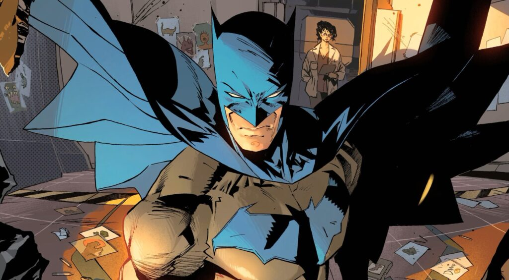

Quem é o Batman?
Batman (Bruce Wayne) é um personagem da DC Comics e atua como Justiceiro (sem ninguém ter pedido iddo a ele) de Gotham. Ele não tem superpoderes:sua força está em treinamento, tecnologia e riqueza(muita riqueza) além de farmar muita Aura.
Em várias historias,Gotham representa problemas sociais: desigualdade, corrupção e violência urbana. Alguns quadrinhos usam o Batman como forma de crítica social,mostrando como falhas nas instituições,interesses econômicos e autoritarismo afetam principalmente quem tem menos direitos e oportunidades.
Galeria

